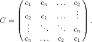

Building a circulant operator
In our first example we will use Spot to create an implicit circulant matrix and that can be used as a fast operator. Circulant matrices are fully specified by their first column, and each remaining column is a cyclic permutation of the first:

These matrices have the property that they can be diagonalized by the discrete Fourier transform (DFT), so that
C = F'diag(d)F,
where d = Fc. An important implication is that C can be treated as a fast operator.
Contents
Instantiating a simple Spot operator
In our toy example, we create a circulant matrix whose first column is simply the sequence 1,...,5:
n = 5;
c = (1:n)'; % make sure c is a column vector
Our very first Spot command will create the required DFT operator. We omit the semicolon so that Matlab will display details of the resulting operator:
F = opDFT(n)
F =
Spot operator: DFT(5,5)
rows: 5 complex: yes
cols: 5 type: DFT
It's straightforward to apply the resulting DFT operator to a vector. The following command applies the Fourier transform to the vector c, which yields the eigenvalues of C:
d = sqrt(n)*F*c
d = 15.0000 -2.5000 + 3.4410i -2.5000 + 0.8123i -2.5000 - 0.8123i -2.5000 - 3.4410i
Notice that we scaled this product by sqrt(n). This is necessary because Spot's DFT is scaled so that it's orthogonal, and therefore, rather than the first column of F being a vector of ones, it's scaled by 1/sqrt(n). We can see this as follows:
sqrt(n) * double( F(:,1) )
ans =
1
1
1
1
1
This last command hints at an important feature of Spot operators that allows them to be indexed like explicit Matlab matrices.
Building more complex operators
Finally, we build the circulant operator with the command
C = real( F'*opDiag(d)*F )
C =
Spot operator: Real(DFT(5,5)' * Diag(5,5) * DFT(5,5))
rows: 5 complex: no
cols: 5 type: real
We could have left out the real modifier, and used the simpler command
C = F'*opDiag(d)*F
However, we need to safeguard against numerical errors that might allow complex values to seep in. Hence, we finish off our construction with the real operator.
Just as the DFT operator F could be applied to vectors, the same is true of the compound operator C. Here we apply it to the first unit vector:
e = eye(5,1); C*e
ans =
1.0000
2.0000
3.0000
4.0000
5.0000
Let's count the number of times that C and F were applied to vectors:
C.nprods
ans =
1 0
F.nprods
ans =
3 1
The suffix nprods gives the number of times that the operator acted on a vector: the first element of X.nprods tracks the count of products with the operator; the second element tracks the count of products with its adjoint. In the first case, we see that C was only used once (in the command C*e above). In the second case, we see that F acted on a vector a total of 4 times---3 with F itself, and once with its adjoint. Where did these 4 products come from? The first is clear, and happened in the command d = sqrt(n)*F*c. Another multiplication with F occurred in the command double( F(:,1) ), which extracted the first column from F. Then two more multiplications, one with F and another with F' occurred when we applied C*e.
Let's verify that C is indeed circulant. We can do this two ways. The first uses the overloaded method double which converts a Spot operator into an explicit matrix:
double(C)
ans =
1.0000 5.0000 4.0000 3.0000 2.0000
2.0000 1.0000 5.0000 4.0000 3.0000
3.0000 2.0000 1.0000 5.0000 4.0000
4.0000 3.0000 2.0000 1.0000 5.0000
5.0000 4.0000 3.0000 2.0000 1.0000
The second approach shows that it's possible to apply an operator simultaneously to a collection of vectors:
C*eye(n)
ans =
1.0000 5.0000 4.0000 3.0000 2.0000
2.0000 1.0000 5.0000 4.0000 3.0000
3.0000 2.0000 1.0000 5.0000 4.0000
4.0000 3.0000 2.0000 1.0000 5.0000
5.0000 4.0000 3.0000 2.0000 1.0000